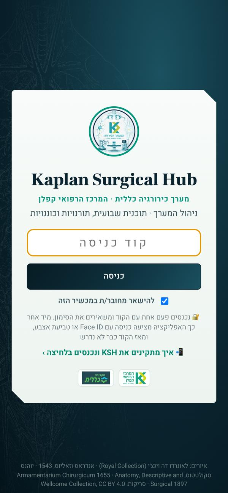
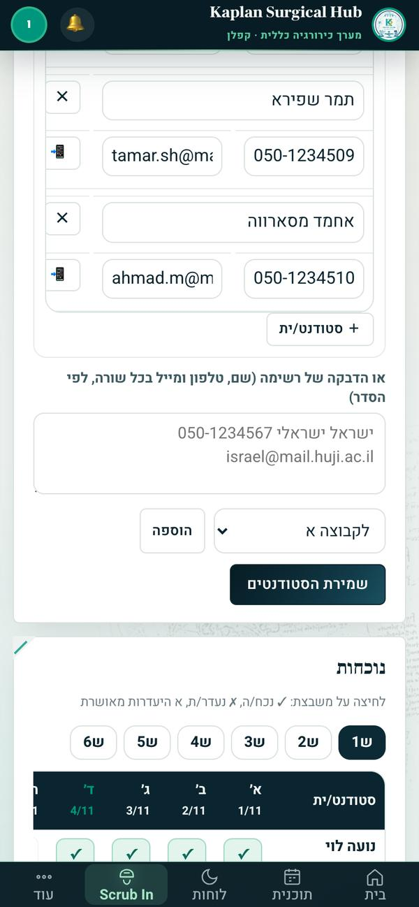
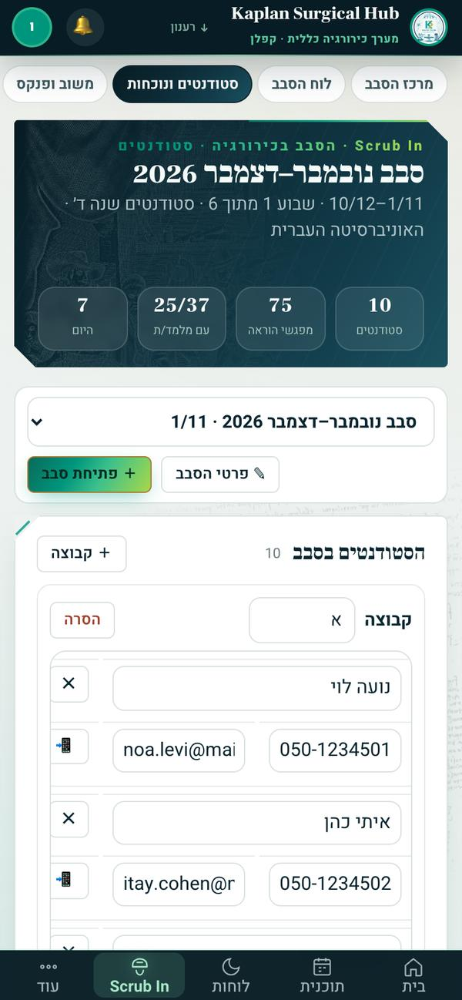
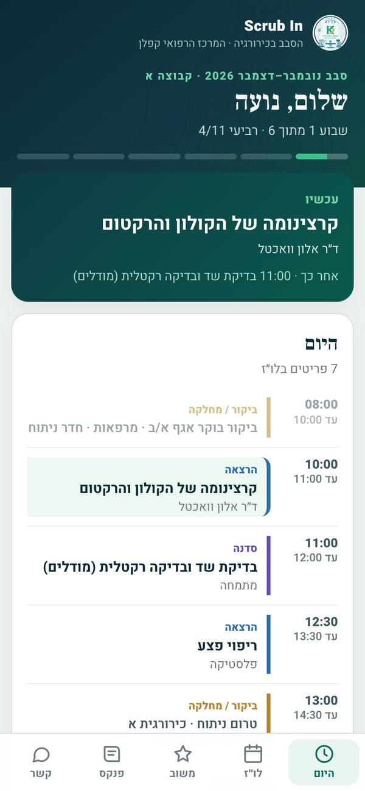
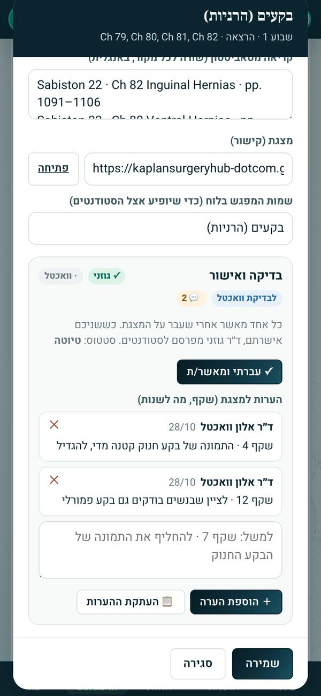

1הרעיון במסך אחד
Scrub In הוא מרכז הסבב של הסטודנטים. הוא לשונית בתוך פורטל המערך Kaplan Surgical Hub. זו אותה מערכת שבה מנוהלים התוכנית השבועית, התורנויות והכוננויות. כל מה שקשור לסבב נמצא במקום אחד.
🗓️תוכנית של 6 שבועותנבנית לבד מהתבנית שלך, ראשון עד חמישי. אחר כך מזיזים ומשנים מה שצריך.
👨⚕️שיבוץ מלמדיםאתה משבץ את הבכירים. מפגש שמחכה למתמחה עובר לצ׳יף והוא משבץ.
🎓סטודנטים ונוכחותקבוצות, טלפון ומייל לכל סטודנט וסימון נוכחות יומי.
📝משוב ופנקסמשוב יומי ושבועי, דירוג של כל מפגש ופנקס ניתוחים לכל סטודנט.
💬הודעות מהסטודנטיםהם כותבים מהאפליקציה שלהם. התשובה נכתבת מהפורטל.
📚סילבוס ו-58 מצגותמטרות למידה, קריאה ומצגת לכל מפגש. הכול לפי Sabiston 22.
📲אפליקציה בכיס לכל סטודנטהלו״ז של הקבוצה, משוב, פנקס והודעות. קישור אישי, בלי סיסמה.
2כניסה לפורטל
הכתובת, אותה אפליקציה כמו פורטל המערך:
kaplansurgeryhub-dotcom.github.io/ops/
🔑 נכנסים עם הקוד האישי שלך, שד״ר גוזני שולח בנפרד. הקוד הוא סיסמה: לא מעבירים אותו ולא כותבים אותו בשום מקום.
📱 באייפון
- פותחים את הכתובת בספארי.
- מקלידים את הקוד ולוחצים כניסה.
- משאירים מסומן "להישאר מחובר/ת במכשיר הזה".
- האפליקציה מציעה כניסה עם Face ID. מאשרים. מאז הקוד כבר לא נדרש.
- כפתור השיתוף ⬆︎ ← "הוספה למסך הבית". מעכשיו נפתח כמו אפליקציה, עם הסמל KSH.
- אם מוצעת הפעלת התראות, מאשרים. כך יודעים על הודעה מסטודנט.
💻 במחשב
- אותה כתובת בכרום.
- קוד, כניסה ו"להישאר מחובר/ת".
- מוסיפים סימנייה לכתובת.

123- הקוד האישי
- להשאיר מסומן
- אחרי הכניסה הראשונה: Face ID במקום קוד
3שני דפים שונים
יש לך שני דפים. חשוב לא להתבלבל ביניהם:
כמו כל רופא במערך
🩺 האפליקציה האישית שלך
- הקישור האישי ?p=… שיש לכל רופא במערך.
- הלו״ז שלך, תורנויות, כוננויות, בקשות והצוות.
- לא קשורה לניהול הסבב.
אחראי הסטודנטים
🎓 הפורטל · Scrub In
- נכנסים עם הקוד (סעיף 2).
- נוחתים ישר בלשונית Scrub In.
- בפורטל אתה מנהל רק את החלק של הסטודנטים.
חמשת המסכים של Scrub In
- חמש לשוניות: מרכז הסבב, לוח הסבב, סטודנטים ונוכחות, משוב ופנקס, סילבוס
- סטודנטים, מפגשי הוראה, כמה מהם עם מלמד/ת ומה היום
- היום בסבב: כל המפגשים של היום ומי מלמד
- ששת השבועות: אחוז המפגשים עם מלמד/ת. לחיצה פותחת את השבוע
- הקבוצות והסטודנטים. ירוק = סומנו נוכחים היום
- מרכז הסבב: היום, ששת השבועות ומחכים למלמד/ת (בתחתית).
- לוח הסבב: שבוע אחר שבוע. לחיצה על מפגש פותחת אותו לעריכה.
- סטודנטים ונוכחות: רשימה, קישורים אישיים ונוכחות.
- משוב ופנקס: מה הסטודנטים כתבו, הודעות ותשובות.
- סילבוס: כל המפגשים, הפרקים בסאביסטון והמצגות.
4פתיחת סבב ורישום סטודנטים
א. פותחים סבב
- במרכז הסבב לוחצים "＋ פתיחת סבב".
- בוחרים את יום ראשון שבו הסבב מתחיל. שישה שבועות, ראשון עד חמישי.
- נותנים שם, למשל "סבב ינואר–פברואר 2027".
- משאירים מסומן "למלא את הלוח מהתבנית" ולוחצים פתיחת הסבב.
- יום ראשון של הסבב
- שם הסבב
- מילוי מהתבנית: כל ההרצאות, דיוני המקרים, הסדנאות, הביקורים והישיבות
- פתיחה
ב. התוכנית לפי שבועות
- שבוע 1–6
- 📋 טקסט למייל ולוואטסאפ: השבוע כטקסט, בפורמט שאתה שולח
- מפגש עם מלמד/ת מהמערך
- ⏳ מתמחה · הצ׳יף ישבץ: מחכה לצ׳יף
- לחיצה על מפגש: נושא, יום ושעות, מקום, קבוצה ומי מלמד. אורח מבחוץ נכתב בשם חופשי.
- ✨ שיבוץ מלמדים משבץ בכירים פנויים לכל המפגשים הפתוחים. אחר כך משנים בלחיצה.
- מפגש של מתמחה: לא משבצים אותו. הוא מופיע לצ׳יף המתמחים. הצ׳יף משבץ מתמחה. אתה רואה את השם כשהוא נקבע.
ג. מדביקים את רשימת הסטודנטים

1234- מדביקים: שורה לכל סטודנט, שם, טלפון ומייל
- בוחרים קבוצה ולוחצים הוספה
- שמירת הסטודנטים
- נוכחות: לחיצה על משבצת מחליפה ✓ / ✗ / א

12- הקבוצות. "＋ קבוצה" מוסיף קבוצה
- 📲 מעתיק הודעה מוכנה עם הקישור האישי
- בלשונית סטודנטים ונוכחות מדביקים את הרשימה מהאוניברסיטה. המערכת מזהה לבד שם, טלפון ומייל בכל שורה.
- בוחרים לאיזו קבוצה, לוחצים הוספה וחוזרים על זה לכל קבוצה.
- לוחצים שמירת הסטודנטים.
- ליד כל סטודנט לוחצים 📲. נוצר קישור אישי והודעת וואטסאפ מוכנה מועתקת. פותחים צ׳אט פרטי עם הסטודנט ומדביקים.
דגשים
- שם מלא, כמו ברשימה של האוניברסיטה.
- מספר נייד לכל סטודנט.
- קבוצות מאוזנות במספר הסטודנטים.
- שולחים את הקישור רק בפרטי, לא בקבוצה. הקישור אישי ונכנס בלי סיסמה.
- מבקשים מכל סטודנט להוסיף את האפליקציה למסך הבית.
- נוכחות: מסמנים כל יום (✓ נכח/ה, ✗ נעדר/ת, א היעדרות מאושרת). הסיכום מופיע בעמודה "עד היום".
- מלמדים מתמחים משבץ הצ׳יף. מפגש כזה מסומן ⏳ עד שהוא משבץ.
ד. מה הסטודנט מקבל

- היום: מה עכשיו ומה הבא, הלו״ז של היום ומשוב יומי.
- לו״ז: כל ששת השבועות של הקבוצה שלו. אחרי מפגש מדרגים אותו ⭐.
- משוב: משוב שבועי על ההוראה, יחס הצוות והארגון.
- פנקס: ניתוחים ופרוצדורות (צפייה, עזרה, ביצוע בהדרכה). בלי פרטי מטופלים.
- קשר: הצוות, וואטסאפ אליך והודעות.
- ליד מפגש שאושר: 📖 חומר למפגש, עם מטרות, קריאה ומצגת.
כל מה שהם כותבים מגיע ללשונית משוב ופנקס. הודעה מסטודנט נענית משם.
5המצגות ובדיקה לפני פרסום
בלשונית סילבוס לכל מפגש יש מטרות למידה, קריאה מסאביסטון וכפתור ▶ מצגת. הסטודנטים רואים רק מה ששנינו אישרנו.
ד״ר גוזניעובר על המצגות ראשון
📤 לבדיקת ד״ר וואכטלמסמן את המצגות לבדיקה שלך
אתהעובר, כותב הערות ומאשר
📣 פרסוםד״ר גוזני מפרסם לסטודנטים
📋 כל ההערותנאספות. ד״ר גוזני מתקן
מה אתה עושה
- בסילבוס לוחצים 📥 לבדיקה שלי. נשארים רק המפגשים שמחכים לך. המספר מראה כמה.
- לוחצים על מפגש. נפתח חלון עם הסילבוס שלו.
- פותחים את המצגת (▶ מצגת בטבלה, או פתיחה בחלון).
- כותבים ב"הערות למצגת", הערה לכל עניין, עם מספר השקף: "שקף 7 · …". לוחצים ＋ הוספת הערה.
- בסוף לוחצים ✓ עברתי ומאשר/ת. אפשר לבטל אחר כך.
- 📥 לבדיקה שלי: רק מה שמחכה לך
- סימני הבדיקה של המפגש
- ▶ מצגת נפתחת בלשונית חדשה
- 📋 כל ההערות: כל ההערות שנכתבו, להעתקה

1234- בדיקה ואישור
- ✓ עברתי ומאשר/ת
- ההערות שנכתבו
- הערה חדשה ו＋ הוספת הערה
מה הסימנים אומרים
✓ גוזני✓ וואכטל
מי כבר אישר. נקודה במקום ✓ = עוד לא.
לבדיקת וואכטל
ד״ר גוזני סימן לבדיקה שלך.
💬 2
כמה הערות נכתבו.
מוכן לפרסום
שנינו אישרנו. ד״ר גוזני מפרסם לסטודנטים 📣.
ההערות לא הולכות לאיבוד: ד״ר גוזני אוסף את כולן (📋 כל ההערות) ומתקן את המצגות.
6מה עושים עכשיו
- להיכנס לפורטל עם הקוד ולהוסיף אותו למסך הבית (סעיף 2).
- להסתובב ב-Scrub In: מרכז הסבב, הלוח, הסילבוס ומצגת או שתיים.
- לחכות לרשימה מד״ר גוזני: אילו מצגות לבדוק קודם.
- לבדוק עם הערות לפי שקף. לאשר כל מצגת שעברת עליה.
- להכין את רשימת הסטודנטים של הסבב הבא: שם מלא, נייד ומייל, מחולקים לקבוצות.
בהתחלה נעשה את כל זה ביחד. המטרה היא שבהמשך תנהל את זה לבד. שאלה או תקלה? ד״ר גוזני בוואטסאפ.